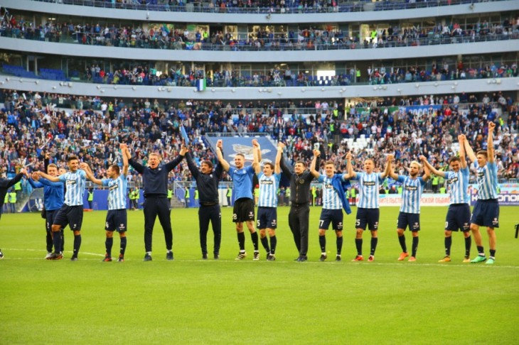

На «Самара-Арене» состоялся второй тестовый матч
Последний стадион ЧМ-2018 введен в строй. На матче, который вывел «Крылья Советов» в Премьер-лигу, было около 40 тыс. зрителей.
В рамках 37-го тура Футбольной национальной лиги (ФНЛ) самарские «Крылья Советов» приняли на поле нового стадиона краснодарскую «Кубань». Матч завершился победой хозяев со счетом 1:0. Набранные три очка принесли самарцам прямую путевку в Премьер-лигу на следующий сезон.
На матч «Крылья Советов» – «Кубань» (1:0) пришли 40 619 человек. Благодаря открытию новых стадионов (в Самаре и Нижнем Новгороде) этот тур стал самым посещаемым в истории ФНЛ — матчи посетили 98 118 человек. Предыдущий рекорд — 77 200 человек. На новую арену в Нижнем Новгороде пришли 42 100 зрителей.
Тестовый матч на «Самара-Арене» прокомментировал генеральный директор оргкомитета «Россия-2018» Алексей Сорокин. По его словам, стадион был заполнен почти на 100%, при том что на других аренах намеренно увеличивали загрузку постепенно, от матча к матчу.
«В отличие от матча в Екатеринбурге встреча в Самаре прошла практически при полной загрузке. На игре присутствовало более 40 тысяч болельщиков, и в целом все было организовано хорошо. Мы отметили некоторые моменты, но они носят исключительно операционный характер», - отметил чиновник.
Стадион в Самаре стал одним из самых проблемных из тех, что возводились в рамках подготовке к Чемпионату мира по футболу. Сроки сдачи «Самара Арены» неоднократно сдвигались, в итоге ее сдали последней из всех арен. При этом у стадиона одна из самых насыщенных программ по матчам, среди провинциальных городов — уж точно. Кроме матчей групповой стадии, здесь пройдут игры раунда плей-офф, а также одну игру точно проведет сборная России.
Самара примет шесть матчей турнира: встречи группового этапа Коста-Рика - Сербия (17 июня), Дания - Австралия (21 июня), Уругвай - Россия (25 июня) и Сенегал - Колумбия (28 июня), а также по одной игре 1/8 финала и 1/4 финала.